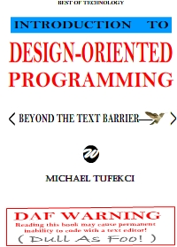
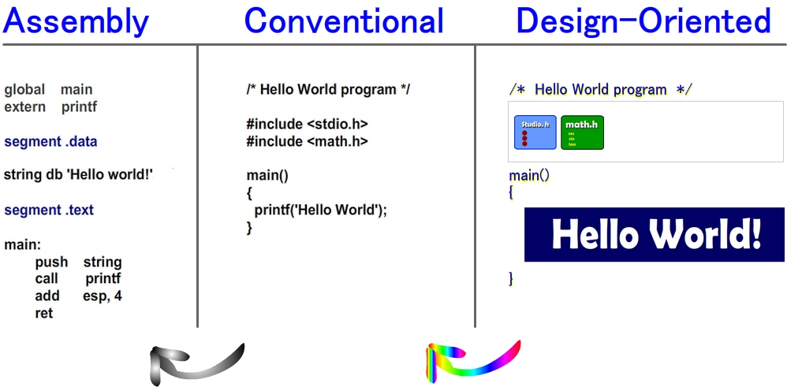
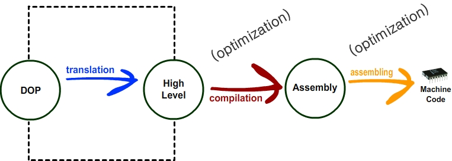

DESIGN-ORIENTED PROGRAMMING - INTRODUCTION BOOK
|  |
synopsis This book is the distillation of research and development from decades of work searching for the holy grail in graphical programming innovation. Eureka! By combining the full power of HTML design with the vast capabilities of text grammar programming languages there is finally a path forward to restore substantive innovation to computer programming languages. Design-oriented language is precisely what is needed to provide higher levels of accessibility and usability to support the learn to code movement.
Print Version 1 FULL COLOR (170 pages) Print Version 2 BLK (100 pages) Github and HTML formats are in the works! Wikipedia: Design-Oriented Programming |
  |
Find the Parrot!
Boost Visual Search Speed Using the Full Optical Bandwidth of Your Hardware
Find the parrot demonstrates how using full color pixel control can dramatically boost visual search speed.